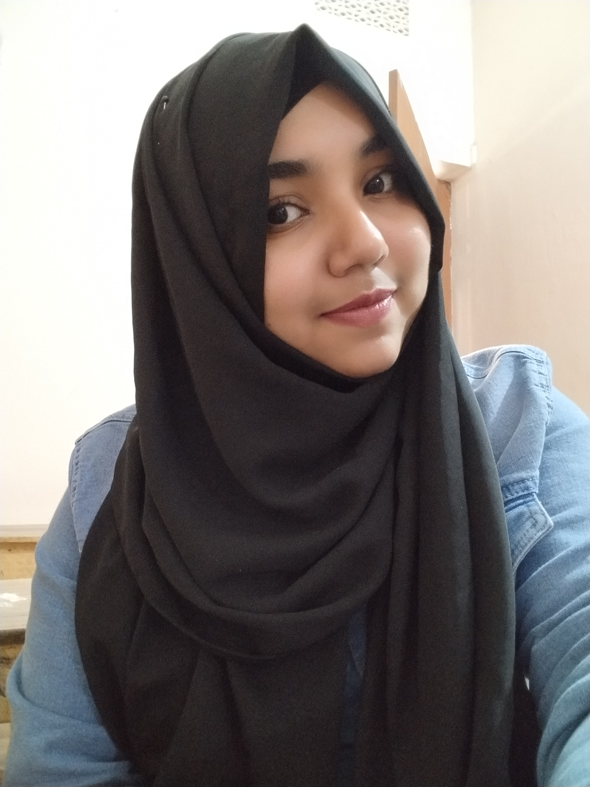

| Home | About | Portfolio | Gallery | Contact |
+01745345353
My Dream

|
My First Dream : I want to be a programmerI want to be a programmer because In today's rapidly evolving world, the role of a programmer is more crucial than ever. As technology continues to permeate every aspect of our lives, from communication to commerce, entertainment to healthcare, the demand for skilled programmers is skyrocketing Endless Learning Opportunities: The tech industry is dynamic and constantly evolving. As a programmer, i'll be at the forefront of innovation, continuously learning new languages, frameworks, and tools. This learning isn't just limited to technical skills; it extends to understanding user needs, market trends, and industry best practices. Versatility and Job Security: Programming skills are highly transferable across industries and geographic locations. From startups to Fortune 500 companies, every organization relies on technology, which means there's a constant demand for skilled programmers. Read More |
My Second Dream : I want to study DUETMy name is Mohosina Akter Biva, and my dream is to study at Dhaka University of Engineering and Technology (DUET). This dream isn't just about earning a degree; it represents my passion for engineering and my commitment to excellence in the field. DUET stands as a beacon of technical education in Bangladesh, renowned for its rigorous academic programs, distinguished faculty, and state-of-the-art facilities. For me, DUET represents more than just a university; it symbolizes a transformative journey towards becoming a skilled engineer capable of solving real-world challenges. One of the key strengths of DUET is its experienced and dedicated faculty. Professors and instructors at DUET are experts in their fields, with many holding advanced degrees and having extensive industry experience. They are committed to providing high-quality education and mentorship, helping students to develop their potential and achieve their academic goals. Read More |
My Third Dream : I want to study abroad for higher educationI want to go abroad and complete my higher education. beacuse By studying abroad one can learn about many things and can use advanced technology Global Networking: Building a global network of friends, classmates, and professionals is a significant advantage of studying abroad. These connections can open doors to international job opportunities, collaborations, and lifelong friendships. Language Skills: Immersion in a foreign language environment helps you improve your language skills, making you more competitive in the global job market. Fluency in multiple languages is a valuable asset in many industries. Read More |
My Fourth Dream : I want to be a successful entrepreneurI want to be a successfull entrepreneur.Being a successful entrepreneur I want to stand on my own feet and take all my responsibilities.I want to build an IT company I would like to give job opportunity to my company to those who are unemployed Innovation and Creativity: Entrepreneurship provides a platform to bring your ideas to life. It encourages creativity and innovation, allowing you to develop unique products or services that address unmet needs in the market. This drive to innovate can lead to groundbreaking solutions and transformative changes in various industries. Read More |
 |
My fifth Dream : I help the poor and helpless peopleI want to help the poor and helpless people. beacuse There are many people in our country who cannot eat properly and who do not have adequate shelter. Clothes and Essentials: Donate clothes, blankets, and other essentials to those in need. Money: Financial donations to reputable charities and non-profit organizations can help provide resources and support to those in need.I want to stand by these helpless people and provide them shelter and food If I can ever afford it I want to build an old age home for those people who have many old parents who are kicked out by their children. Read More |
My Sixth Dream : I want to go for HajjHajj is one of the Five Pillars of Islam and is a significant religious duty for Muslims.By performing Hajj all the sins of life are absolved and our Holy Prophet Muhammad SAW was born there. Tawaf: Pilgrims perform Tawaf by circling the Kaaba (the cube-shaped building at the center of the Grand Mosque in Mecca) seven times in a counterclockwise direction. The Kaaba is considered the "House of Allah" and is the direction (Qibla) Muslims face during prayers. Read More |
My Seventh Dream : I want to build my own duplex house with my own moneyI want to build my own duplex house with my own money beacuse Everyone says that girls don't have a home or a father's house or a father-in-law's house, but I want to have a house of my own Ever since I was a child, I thought that when I grew up and had a job, I would build my own duplex house I will name the house biva Villa Read More |
My Eight Dream :I want to make a beautiful gardenI love to plant trees, fruit trees, flower trees, I like to plant them .I want to make my beautiful garden in which I will plant different types of trees such as flower trees, fruit trees Gardening is a deeply fulfilling and enriching hobby that connects us to nature and nurtures a sense of tranquility and accomplishment. It involves cultivating plants, flowers, fruits, and vegetables in a personal or communal space, transforming it into a vibrant, living landscape. The process of gardening offers numerous benefits, from providing fresh produce and beautiful blooms to promoting physical activity and mental well-being. It teaches patience and perseverance as gardeners tend to their plants, watching them grow from seeds to full maturity. Read More |
My 9th Dream : I want to travel to different parts of the countryTraveling to hills and seas offers a unique blend of adventure and tranquility, making it a perfect escape from the daily grind. The majestic hills, with their rolling landscapes and panoramic views, provide a sense of awe and inspiration. Hiking through lush forests, breathing in the crisp, fresh air, and reaching the peak to witness breathtaking sunrises or sunsets creates an unforgettable experience. On the other hand, the serene beauty of the sea, with its vast expanse of water meeting the horizon, offers a different kind of solace. Walking along sandy beaches, feeling the gentle waves lap at your feet, and listening to the rhythmic sounds of the ocean can be incredibly calming and rejuvenating. Both landscapes allow for various activities, from trekking and rock climbing in the hills to swimming, snorkeling, and sailing in the sea. Read More |